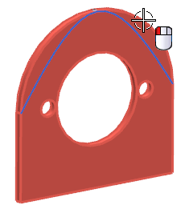
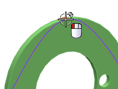
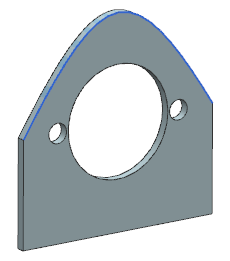

Trim the solid body using the Swept feature
-
On the Feature toolbar, click Trim Body
 .
.
-
For the Target, select the solid body

-
For the Tool, select the face of the Swept feature.

With all necessary parameters defined, a preview of the Trim Body feature appears.

Note: If the vector of the horizontal edge is not pointing away from the solid body as shown, click Reverse Direction
 .
.
-
Click OK to create the Trim Body feature.

-
Close the part.